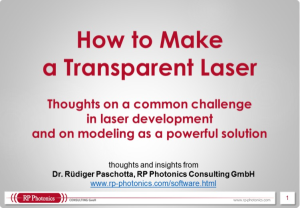

Computermodellierung für Laserentwicklung und Wissenschaft
mit Modellierungs- und Design-Software von RP Photonics


RP Photonics hat sehr leistungsfähige Simulationssoftware entwickelt. Für alle hier beschriebenen Software-Pakete werden Benutzerlizenzen angeboten; alternativ können Sie im Rahmen von Consulting davon profitieren. Die Software kann verwendet werden,
- um die Eigenschaften und die Performance vieler Komponenten oder Geräte zu berechnen (z. B. von passiven Fasern, Faserlasern, Laserresonatoren oder Dünnschichtoptiken)
- um ein quantitatives Verständnis zu entwickeln
(z. B. über die Auswirkungen bestimmter Effekte) - um Prozesse oder die Auswirkungen von Designänderungen zu simulieren
- um Laborexperimente zu planen
(z. B. betreffend benötigte Teile und erwartete Performance) - um die Produktdesigns effizienter zu optimieren
- um die Ursachen beobachteter Probleme zu identifizieren
Ein Vortrag zeigt, wie Computersimulationen Ihre Laserentwicklung enorm unterstützen können!
Ihr Nutzen
Die wichtigsten Nutzeffekte der Verwendung solcher Software sind:
- Sie können den Entwicklungsaufwand reduzieren.
- Sie können ihre Produkte schneller an den Markt bringen.
- Sie können bessere Produkte entwickeln,
z. B. mit besserer Performance und Zuverlässigkeit. - Sie können neue Ideen gewinnen,
z. B. für Verbesserungen oder neue Produkte. - Sie können Ihre technische Kompetenz ausbauen.
Kurz gesagt: Kommen Sie schneller voran und sparen Sie Geld!
Die Produkte
Hier erhalten Sie einen kurzen Überblick über unsere Softwareprodukte, die auf eigenen Seiten detaillierter beschrieben wird:
Die kostenlose Software RP Fiber Calculator für Berechnungen zu passiven optischen Fasern

RP Fiber Calculator ist ein praktisches Werkzeug für Berechnungen zu optischen Fasern. Beispielsweise können Sie damit
- einfach Brechungsindexprofile in der grafischen Benutzeroberfläche eingeben
- alle geführten Moden der Fasern berechnen – mit effektiven Brechungsindizes, effektiven Modenflächen, Modenprofilen usw.
- herausfinden, wie ein Laserstrahl (Gauß-Strahl) in ein dejustiertes Faserende eingekoppelt wird – erhalten Sie die Leistungen, die in die einzelnen Moden geht
- die Intensitäts- und Amplitudenprofile des eingeführten Lichts an verschiedenen Stellen in der Faser anzeigen, ebenso im Fernfeld nach Verlassen der Faser
- die Kopplung zwischen Fasern berechnen, unter Berücksichtigung unterschiedlicher Designs, eines transversalen Versatzes der Faserkernes und eines Winkelfehlers
- die Reflexion an Faserenden berechnen, die auch schräg geschnitten sein können
RP Fiber Calculator ist ein prima Werkzeug für schnelle Berechnungen. Obwohl es nicht so leistungsfähig und flexibel ist wie RP Fiber Power (siehe unten), wird es für viele Nutzer eine sehr nützliche Hilfe bei der täglichen Arbeit mit Faseroptik sein.
Wir bieten die Basisversion von RP Fiber Calculator kostenlos an und verkaufen Lizenzen für die noch leistungsfähigere PRO-Version. Obwohl ein Teil der oben beschriebenen Funktionalität nur in der PRO-Version geboten wird, ist die kostenlose Version bereits ein wirklich nützliches Werkzeug.
(siehe mehr Details)
RP Fiber Power für das Design von Faserlasern und Faserverstärkern

RP Fiber Power ist ein leistungsfähiges Werkzeug für das Design von Faserlasern und Faserverstärkern, aber auch ASE-Quellen und passiven Fasern. Beispielsweise kann man damit
- Fasermoden berechnen
- Lichtfelder numerisch propagieren in Fasern und anderen Wellenleitern, die beliebige Indexprofile, variable Krümmungsradien, verjüngte Regionen, mehrfache Kerne, verlustbehaftete Regionen etc. haben können
- die Details von Fasernkopplern, Faser-Interferometern u. ä. studieren
- Pump-, Signal- und ASE-Leistungen in Faserlasern und Faserverstärkern berechnen
- die Dynamik von gepulsten Verstärkern und gütegeschalteten Lasern untersuchen
- die Ausbreitung ultrakurzer Pulse in Verstärkern und modengekoppelten Lasern untersuchen
RP Fiber Power ist ein leistungsfähiges Werkzeug für die Analyse und Optimierung der Performance z. B. im Hinblick auf Verstärkung, Rauschzahl, Feedback-Empfindlichkeit und Leistungseffizienz. Es kann sogar für überaus komplizierte Systeme verwendet werden (z. B. für Upconversion-Laser) und ist ebenfalls auch für die meisten Bulk-Verstärker und -laser anwendbar. Durch die eingebaute Skriptsprache ist es ein extrem flexibles Werkzeug.
(mehr Details)
RP Resonator für das Design von Laserresonatoren

RP Resonator erlaubt das Design und die Optimierung von optischen Resonatoren, insbesondere von Laserresonatoren. Es kann nicht nur einen weiten Bereich von Eigenschaften solcher Resonatoren berechnen (z. B. den Verlauf der Strahlradien, den Einfluss von thermischen Linsen und Dejustierung, Dispersion von geometrischen Effekten usw.), sondern erlaubt auch ausgefeilte Optimierungen.
Beispielsweise können Sie mit RP Resonator Resonatordesigns finden, die gleichzeitig eine Reihe von Anforderungen erfüllen, etwa gegebene Modengrößen an bestimmten Stellen, minimale Empfindlichkeit auf thermische Linsen und Dejustierung, minimalen Einfluss von Aberrationen auf die Strahlqualität, usw.
Sie werden kaum ein ähnlich flexibles Werkzeug für das Resonatordesign auf dem Markt finden!
(mehr Details)
RP ProPulse für die Simulation der Propagation von ultrakurzen Pulsen

RP ProPulse dient der Simulation der Propagation ultrakurzer Laserpulse
- in modengekoppelten Lasern
- in synchron gepumpten parametrischen Oszillatoren
- in optischen Fasern
Eine Vielzahl von Effekten kann berücksichtigt werden, eingeschlossen diverse Arten optischer Nichtlinearitäten, so dass sogar extreme Prozesse wie z. B. Superkontinuum-Erzeugung in photonic crystal fibers simuliert werden können. Die sehr flexible Benutzeroberfläche erlaubt es, das jeweilige Problem schnell zu definieren, Ausgaben in der Form von verschiedensten Diagrammen (z. B. auch Zeit-/Frequenz-Plots und Spektrogrammen) zu erzeugen, tabellierte Daten zu importieren oder exportieren sowie bei Bedarf die Daten umfassend weiter zu verarbeiten (z. B. für statistische Analysen, um Rauscheigenschaften zu bestimmen).
(mehr Details)
RP Coating für das Design optischer Vielschichtstrukturen

RP Coating dient dem Design komplexer optischer Vielschichtstrukturen:
- Laserspiegel
- Spiegel für die Dispersionskompensation
- Kantenfilter
- Etalons
- breitbandige Antireflexbeschichtungen
- Dünnschichtpolarisatoren
- Halbleiterstrukturen wie SESAMs und VECSELs
Seine flexible Bedieneroberfläche erlaubt es, Vielschichtstrukturen auf verschiedene Weisen zu definieren. Eine Vielzahl von Eigenschaften solcher Strukturen kann berechnet werden, einschließlich Reflexions- und Transmissionsamplituden, chromatischer Dispersion, internen Feldverteilungen etc. Außerdem erlaubt RP Coating ausgefeilte numerische Optimierungen.
(mehr Details)
RP Q-switch für das Design von gütegeschalteten Lasern
RP Q-switch kann die zeitliche Entwicklung von optischer Leistung und Verstärkung in gütegeschalteten Lasern (Bulk- und Faserlasern) sowie in nachgeschalteten Verstärkerstufen simulieren. Die Steuerung erfolgt über einfach handhabbare Formulare.
(mehr Details)
Anstatt eine eigene Softwarelizenz zu erwerben, können Sie die Software auch durch RP Photonics anwenden lassen. Sie kaufen dann lediglich die Resultate im Rahmen der technischen Beratung.
Anforderungen an den Computer
Alle unsere Software läuft unter Microsoft Windows (ab XP), aber nicht auf virtuellen Maschinen. Wir liefern normalerweise eine 32-bit-Version der Software, die auf 32-bit- oder 64-bit-Windows-Versionen läuft. Auf Anfrage liefern wir ohne Mehrpreis eine 64-bit Version, die ein 64-bit-Windows benötigt.
In den meisten Fällen sind die Anforderungen an die Hardware bzgl. Geschwindigkeit und Speicher sehr moderat. In einigen Fällen kann es jedoch hilfreich oder gar notwendig sein, mindestens 4 GB Hauptspeicher und eine schnelle CPU zu haben.
Auf Qualität kommt es an
Dr. Paschottas Software ist nicht nur sehr leistungsfähig, sondern ist in verschiedener Hinsicht qualitativ sehr hochwertig:
- Die verwendeten Gleichungen beruhen auf einem sehr soliden physikalischen Verständnis und der Kenntnis der relevanten wissenschaftlichen Literatur.
- Das Software-Design wurde von Anfang an sorgfältig geplant, um einfache spätere Erweiterungen zu ermöglichen, ohne Konzepte noch ändern zu müssen.
- Die Programme wurden in vielen Details sorgfältig geprüft, z. B. durch Vergleich mit analytisch berechneten Resultaten für spezielle Situationen, oder durch detaillierten Vergleich mit Resultaten anderer Forscher.
- Die Bedieneroberflächen sind so flexibel, dass es niemals nötig ist, projektspezifische Details im Quellcode zu behandeln. Stattdessen können die Benutzer selbst Skripte entwickeln, um die ausgefeiltesten Simulationen und Optimierungen zu implementieren.
- Zur Software gibt es eine sorgfältig erstellte und umfassende Dokumentation.
- Benutzer erhalten hochwertigen und hilfreichen technischen Support.
Bevor Sie versuchen, solche Software selbst zu entwickeln, bedenken Sie die Risiken durch den Zeitaufwand (immer höher als anfangs vorgesehen!), nichtideale Algorithmen (mit Einflüssen auf die Genauigkeit der Resultate oder die Rechenzeit) und mögliche Fehler (die Ihr Entwicklungsteam womöglich irreführen). Und vergessen Sie nicht, dass Software nur gerade eine der Voraussetzungen für Modellierung darstellt: eher noch wichtiger sind ein gründliches physikalisches Verständnis, das Wissen über mögliche Ansätze und mathematische Methoden, Erfahrungen zur Nutzbarmachung der Resultate, usw. Einen wirklichen Experten für solche Arbeiten zu haben, ist eine Menge wert.
Erhalten Sie die RP Software News!
Unsere Software ist in mehrerlei Hinsicht besonders:
- Entwicklung und Support werden von einem weltweit bekannten Experten durchgeführt.
- Der technische Support kann nicht nur für rein Software-spezifische Fragen benutzt werden, sondern auch zur Klärung technischer oder wissenschaftlicher Fragen im betreffenden Feld.
- Die Software (außer RP Fiber Calculator) ist durch eine eingebaute Skriptsprache extrem flexibel, also auch zur Durchführung raffinierter Berechnungen geeignet.
Individuell entwickelte Software
RP Photonics bietet auch die Entwicklung spezialisierter Software an, die individuell auf die Bedürfnisse eines Kunden ausgerichtet wird. Dies könnte z. B. die folgenden Dinge betreffen:
- diverse Arten von Simulationen, z. B. der Dynamik von Lasers oder Verstärkern
- andere Berechnungen in der Optik, z. B. betreffend chromatische Dispersion, Interferometer, Kramers-Kronig-Relationen etc.
- spezielle Datenerfassung und -auswertung, z. B. Berechnung von Rauschspektren aus in der zeitlichen Domäne aufgenommenen Daten
Wenn Sie daran interessiert sind, kontaktieren Sie uns um herauszufinden, was wir für Sie tun können.